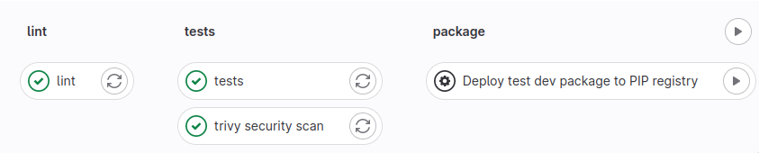
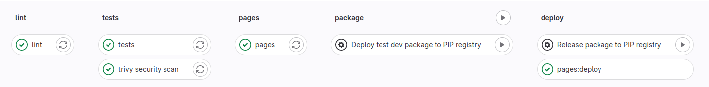
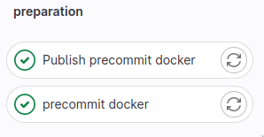
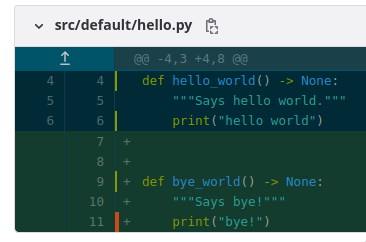
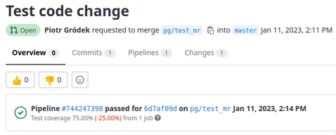
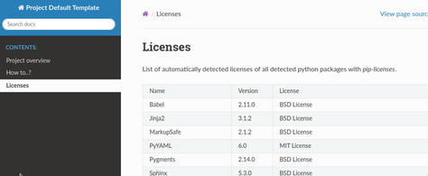
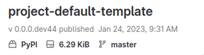
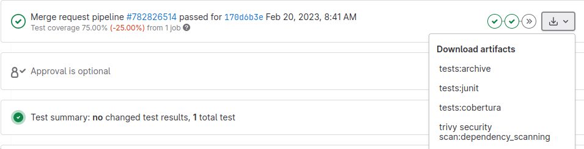

GitLab CI configuration¶
This is optional cookiecutter template option, which result in .gitlab-ci.yml file creation.
File has comments for jobs so it should be relatively easy to understand and adapt.
It generates automated pipeline to ensure code quality, tests and other goodies.
We also optimized the pipeline so it should take 2-4 minutes to run on an empty project.
Note
To reduce computations and costs CI is only executed when a developer opens a Merge Request and on a default branch.
Moreover, almost all unfinished jobs can be interrupted by more recent code change.
It is controlled by interruptible: true flag.
Context-sensitive stages¶
Merge Request¶
When a developer opens a Merge Request we run linters and tests stages.
Optionally a development package can be released to PIP registry with a manual trigger.

Main branch¶
After merge is concluded, we execute more stages - documentation build & upload to GitLab Pages and option to release non-development package with manual trigger.

On pre-commit changes¶
When a pre-commit configuration file is changed or docker/precommit/Dockerfile additional stage appears - its role is to build and
upload the docker image to GitLab Container Registry.
This is quite complex due to the need to work with new repository or existing branch and it has to provide bootstrapping for image.

On Merge Request it builds, uploads and tests the image tagged with git commit SHA.
Default docker name is precommit and in .gitlab-ci.yml is defined as: PRECOMMIT_IMAGE: $DOCKER_REGISTRY/precommit.
On master it does the same but also tags the docker image with latest tag.
It takes 3-5 minutes to build a docker image from scratch, future builds should be faster due to docker image caching.
Warning
If possible adapt gitlab linter tasks to always use a SHA tagged image instead of using latest tag - the only
reason we could not do it is due to a need to provide automatic setup without manual intervention.
By using SHA tags, you can simplify linter stage and have more reproducible pipelines.
To switch you must replace precommit:latest to precommit:dev-<GIT COMMIT SHA>.
Commit SHA is the long hash for each git commit, to get one for your current one you can
use git rev-parse HEAD, also GitLab has $CI_COMMIT_SHA environment variable.
Stages summary¶
preparation stage:
runs only to bootstrap or update pre-commit docker image
it reduces linter stage from ~2 minutes to ~20 seconds on empty project.
lint stage:
ensures code style consistency
checks for code mistakes
provides basic safety checks
see: precommit page
tests stage:
runs
pytesttestscalculates code coverage:

red marks lines not covered by tests, green are covered
reports code % coverage

checks for licenses
fails if any third-party installed python package license is not present on allowlist (
.license-whitelist.txt).
generates
pip freezeartifacts: exact pinned package versions + licenses can be downloaded from this stage
package stage:
builds pip
*.tar.gzand*.whlpython packagesadds build number to package
pages stage:
generates and builds Sphinx documentation
scans and generate information table for all used python packages

security stage:
runs
trivyand fails on critical security vulnerability - required for SOC 2 Certification - do not remove itartifacts: json and html generated by trivy
deploy stage - only on main/master branch:
uploads generated Sphinx docs to
GitLab Pages. All project members can access itbuild and upload release (non-development) package to private
GitLab Package Registry
Artifacts¶

Pipelines and jobs provide a set of artifacts. Aside of required ones for tests/coverage especially interesting are:
tests:archive
licenses.txt - contains dump of libraries with detected licenses
requirements-freeze.txt - pip freeze to provide reproducible build
dist/ - contains built python packages
trivy security scan:archive:
security report in html file
trivy security scan:dependency_scanning:
security report in json file, however it is easier to read job logs
License check¶
We use pip-licenses to extract installed packages and obtain license information.
By default, we accept only those selected licenses from .license-whitelist.txt.
Each short license must be in new line and it is matched by checking if string exists in line.
Sometimes there are situations when a license library detection does not work or there is a justified decision
to accept some license - to accept such library edit .libraries-whitelist.txt.
All libraries must be put in single line.
Warning
.license-whitelist.txt must have a license in each distinct line.
.libraries-whitelist.txt must be contained in single line (e.g. “foo bar”).
GitLab details¶
Please get familiar with official documentation before you modify the yaml configuration.
Changing YAML is error-prone so here are protips:
Use YAML validator in your editor to fix wrong whitespaces.
Operate on branch first or create a temporary test repository.
Use GitLab validator & simulator
ifand similar conditions should be added last, after testing a job.
GitLab Pages¶
GitLab Pages is static hosting solution which is used to host documentation.
Warning
Name pages for job name and stage is important! Changing this name will break GitLab feature to automatically upload and host documentation.
Note
Due to using deepsense.ai there is always error raised by browsers due to certificate not covering the subdomain. This is known issue due to “.” appear in name.
There is no known workaround, except user accepting and adding exception for it.
GitLab Package Registry¶
All master and merge requests are set to manual trigger to build and upload python pip package to the related private repository.
Essential read is GitLab documentation.
Tip
It can be also customized to adapt bump2config to tag and make GitLab to release a new package on git tag event.
Check also packaging page.
Some projects might benefit from switching to automatic uploads instead of manual.
GitLab Docker Registry¶
By default we use it for pre-commit docker image - so each project can have it’s own.
There is also a company-wide docker registry. Ask IT about it.
Other GitLab featurs¶
The template targets only GitLab free mode which is limiting many functionalities.